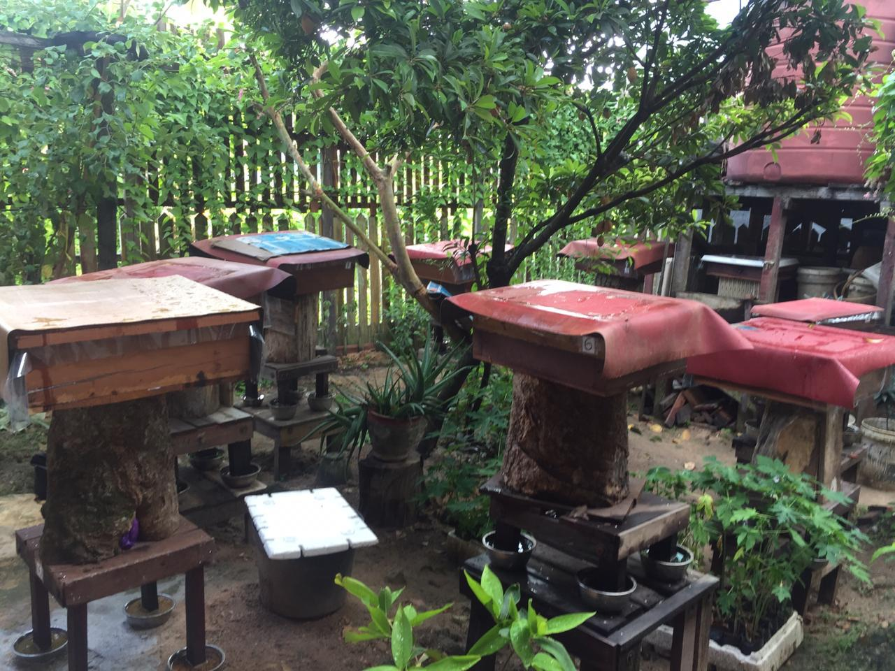
Kebun & Koloni
Perkenalan dengan lingkungan kebun dan koloni lebah kelulut.
DARI ALAM BORNEO
Cerita tentang lebah kelulut, kebun, dan madu khas Kalimantan. Kenali produk kami dan pesan dengan mudah melalui WhatsApp.
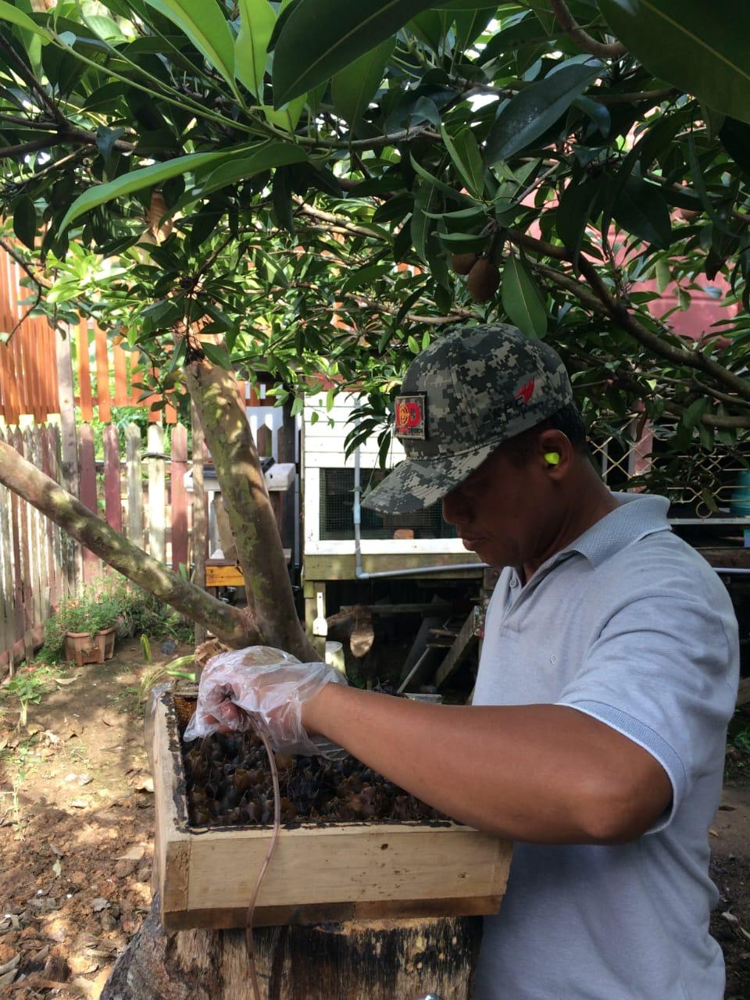
CERITA BORNEO MADU KELULUT
Borneo Madu Kelulut hadir untuk memperkenalkan madu kelulut dan cerita di balik prosesnya. Melalui informasi kebun, lebah, panen, dan produk, kami ingin membantu pelanggan mengenal madu yang kami tawarkan dengan lebih baik.
Kenali proses kami →LEBAH TANPA SENGAT
Kelulut merupakan kelompok lebah tanpa sengat yang hidup berkoloni. Lebah ini mengumpulkan nektar dan serbuk sari dari bunga, lalu menyimpannya di dalam struktur sarang yang khas.
Di sini, pengunjung dapat mengenal lebih jauh karakteristik lebah kelulut, habitatnya, serta bagaimana madu dihasilkan.
DARI KEBUN HINGGA KEMASAN
Dokumentasi nyata menjadi cara kami berbagi cerita dan memperkenalkan proses di balik produk.

Perkenalan dengan lingkungan kebun dan koloni lebah kelulut.
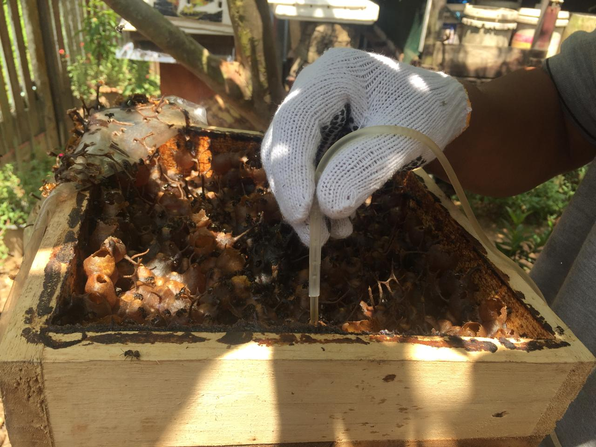
Dokumentasi proses pengambilan madu dari sarang.
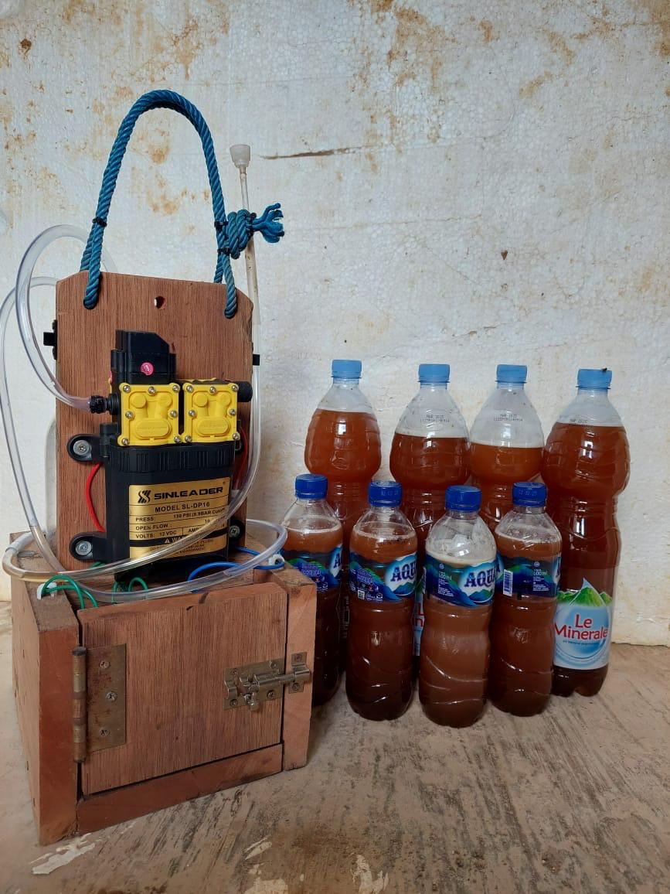
Menampilkan proses persiapan produk sebelum sampai ke pelanggan.
PILIH KEMASAN
Tersedia dalam dua pilihan ukuran. Pilih kemasan yang sesuai, lalu hubungi kami untuk pemesanan.
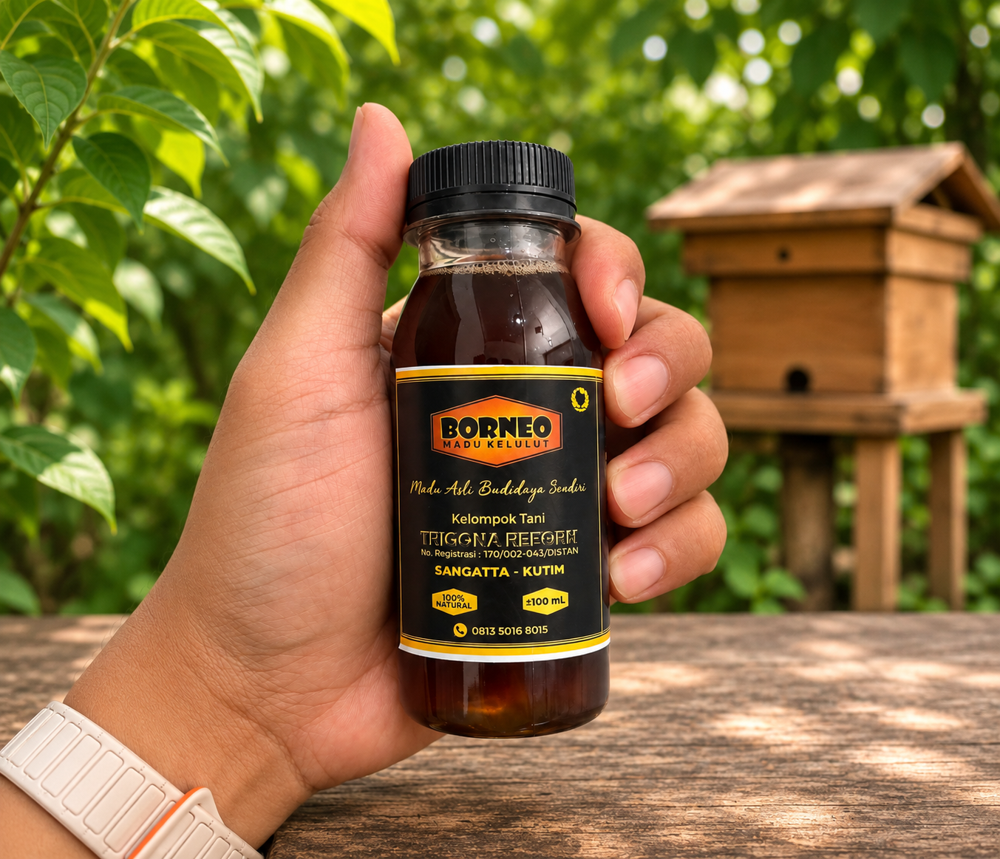
PRAKTIS100 ml
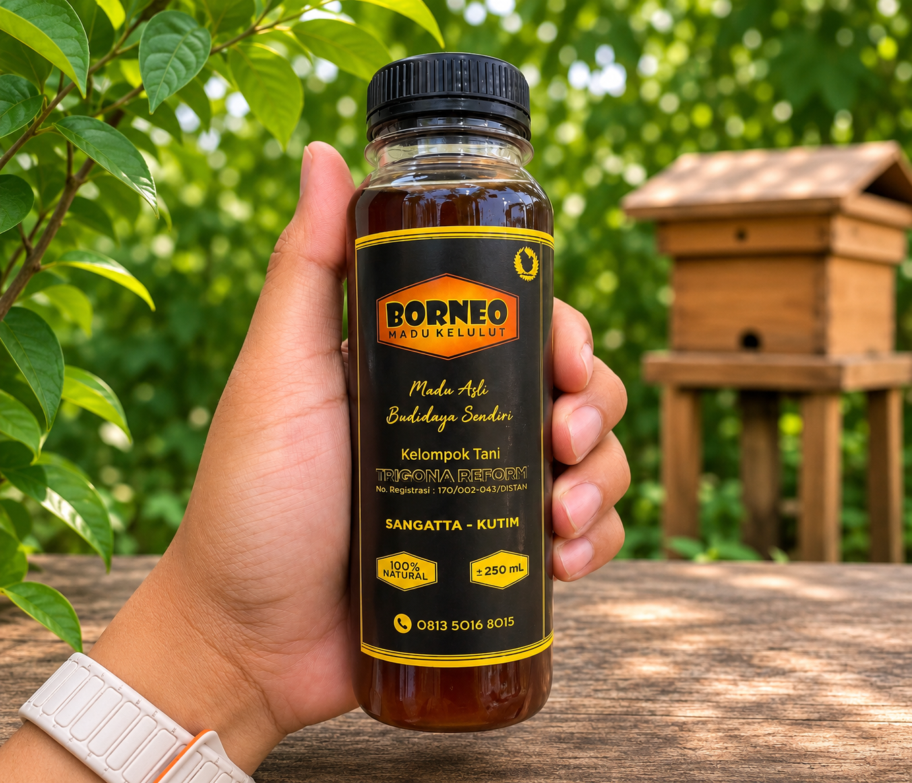
250 ML250 ml
Untuk informasi ketersediaan produk dan pengantaran, silakan hubungi kami melalui WhatsApp.
MOMEN DARI KEBUN
Foto-foto pilihan dari kebun, lebah, sarang, panen, dan produk Borneo Madu Kelulut.
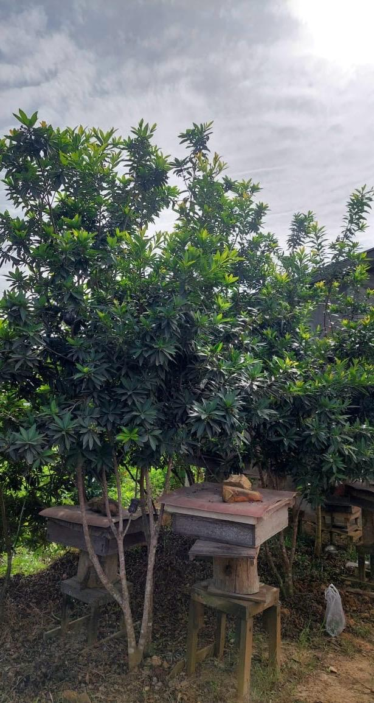
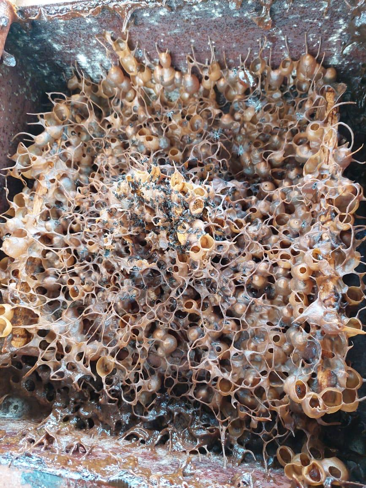
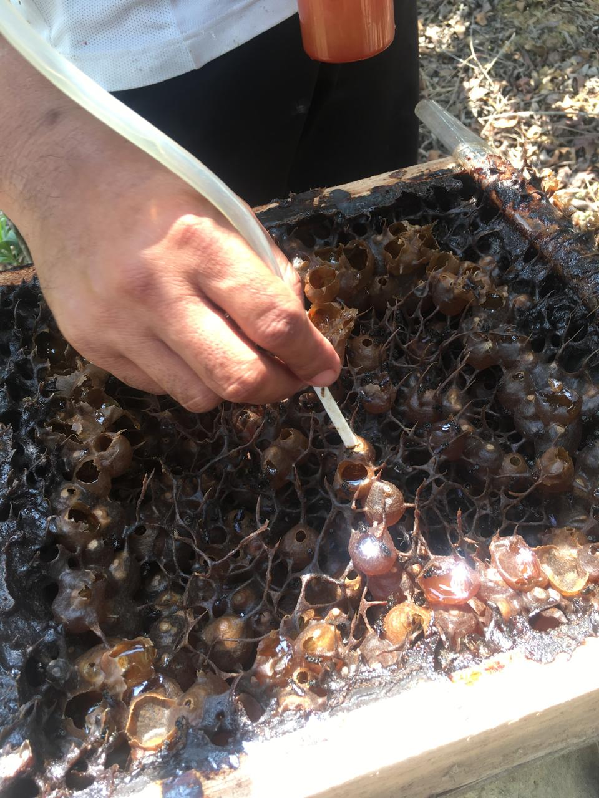
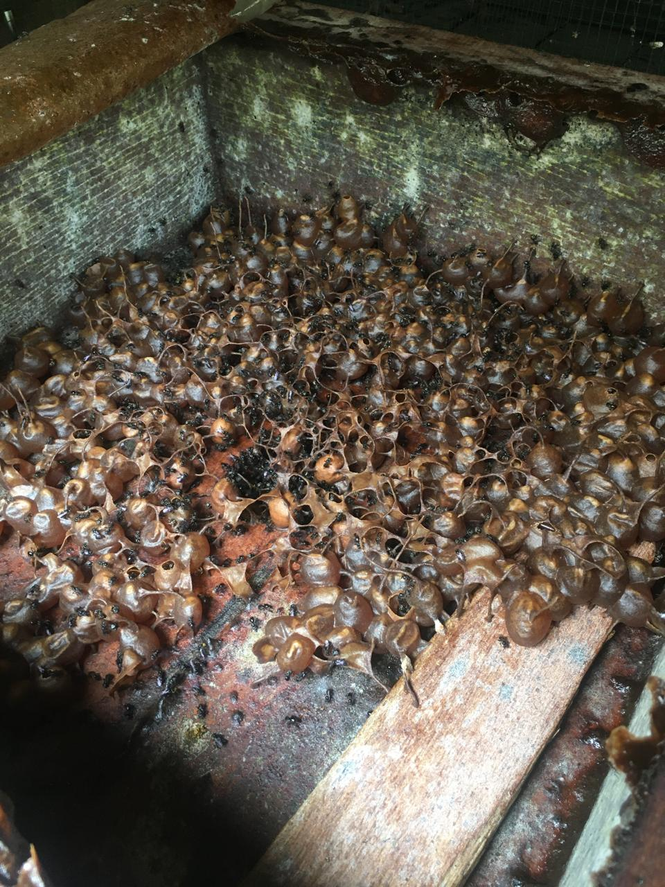
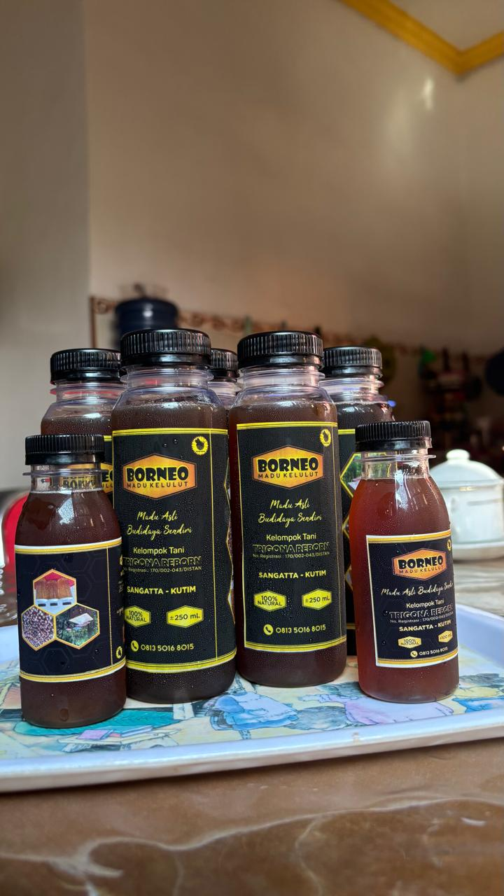
KENALI PRODUK KAMI
Kami percaya kepercayaan tumbuh dari informasi yang jelas. Kenali karakteristik madu kelulut dan cara menyimpannya.
Madu kelulut adalah madu yang dihasilkan oleh lebah tanpa sengat dari kelompok stingless bee. Karakteristik warna, aroma, dan rasa dapat berbeda tergantung jenis lebah, sumber pakan, dan kondisi lingkungan.
Madu kelulut umumnya memiliki rasa khas yang dapat terasa asam-manis. Warna, aroma, dan kekentalannya dapat bervariasi secara alami.
Simpan dalam wadah tertutup rapat, di tempat bersih dan sejuk, serta terhindar dari sinar matahari langsung. Ikuti petunjuk penyimpanan pada kemasan produk.
Pilih ukuran 100 ml atau 250 ml, kemudian tekan tombol WhatsApp pada produk. Kami akan membantu mengonfirmasi pesanan dan informasi pengantaran.
BORNEO MADU KELULUT
Hubungi kami untuk informasi produk dan pemesanan di Sangatta dan sekitarnya.
Hubungi via WhatsApp ↗ WhatsApp: 0813-5016-8015